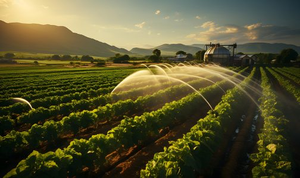
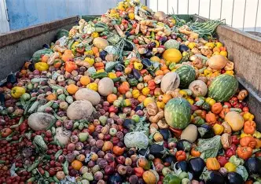
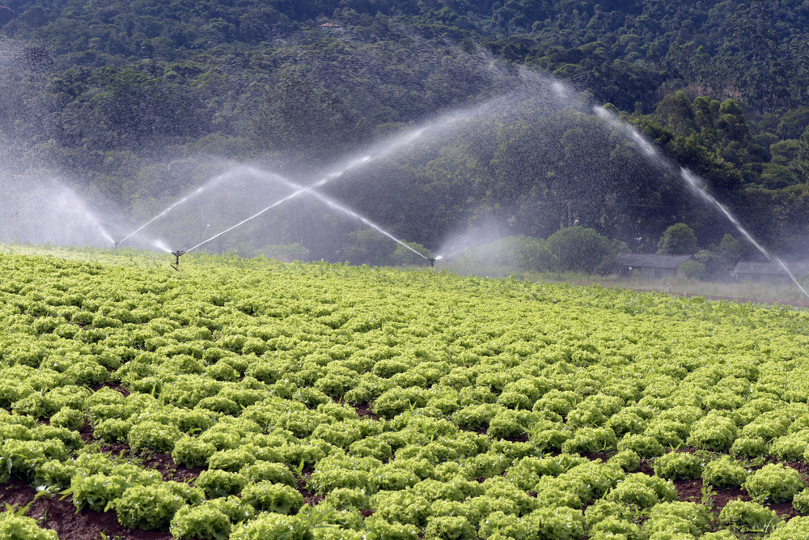
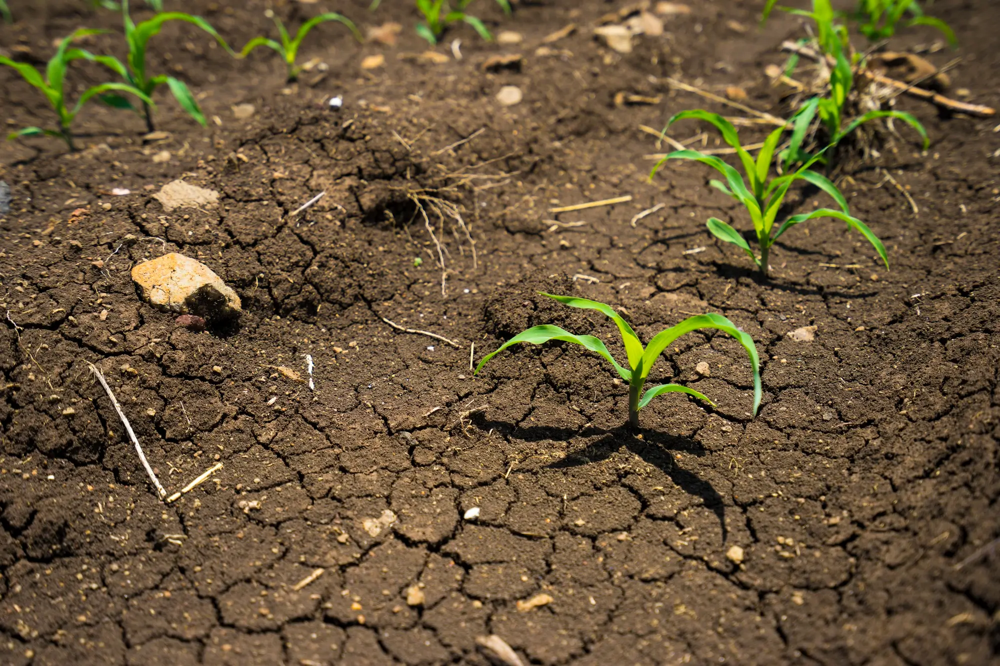

30%
das perdas podem acontecer por manejo, transporte e armazenamento inadequados.
Soluções contra desperdício no agronegócio
O AgroVerde Brasil é uma proposta de serviço digital para conscientizar produtores, estudantes e comunidades sobre práticas sustentáveis no agronegócio, com foco na redução de perdas produtivas e na preservação ambiental.

das perdas podem acontecer por manejo, transporte e armazenamento inadequados.
do uso de água doce no planeta está ligado à agricultura em escala global.
Quando se desperdiça alimento, também se desperdiçam solo, energia e água.
O desperdício de alimentos e recursos naturais gera prejuízo econômico, reduz a eficiência da produção e amplia a degradação do meio ambiente. O impacto aparece desde a colheita até a distribuição.

Parte da produção pode ser perdida por falhas de logística, armazenamento e seleção, reduzindo o aproveitamento do que foi cultivado.
Ver soluções
Irrigação sem controle adequado e desperdícios operacionais aumentam o consumo hídrico e pressionam mananciais e reservas locais.
Ver indicadores
Solo, energia e insumos também são perdidos quando o sistema produtivo não aproveita bem o que já foi investido no campo.
Participar do projetoOs gráficos abaixo representam percentuais ilustrativos para conscientização no contexto do projeto.
Estimativa ilustrativa de perdas em diferentes etapas.
Gráfico circular ilustrativo mostrando como o desperdício afeta diferentes recursos.
O projeto propõe um portal educativo e informativo para aproximar tecnologia, sustentabilidade e conscientização sobre a produção agrícola responsável.
Conteúdos explicativos sobre desperdício de alimentos, água e preservação do solo.
Gráficos, porcentagens e painéis que tornam o problema mais fácil de entender.
Espaço para cadastro de interessados em acompanhar o projeto e receber informações.
Incentivo a práticas que reduzam o impacto ambiental no agronegócio brasileiro.
Cadastre-se para conhecer mais sobre o projeto e fortalecer a conscientização sobre sustentabilidade no campo.